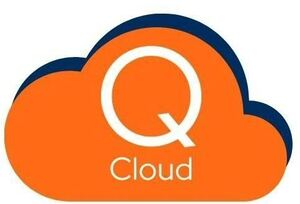

Trade Mark Journal No.2025/038 19 September 2025
WO0000001861220 (9,42)
Office of origin: Australia
Date of International Registration:4 April 2025
Date of designation in the UK:
4 April 2025

- Class 9
- Computer software; application software; computer software and application software for business management; computer software and application software for accounting; computer programs and application software for analysing market information; computer programs and application software for data analysis; business management software; computer software and application software for gathering, processing, monitoring, analysing, managing and/or reporting information; computer software and application software for enterprise resource planning; computer software and application software for analysing labour costs and/or creating rosters; computer software and application software for analysing sales, profitability, financial data and/or business trading activities; computer software and application software for facial recognition, task management, regulatory compliance, incident reporting and/or staff training; downloadable and recorded content; artificial intelligence computer software for use with the provision of financial, accounting and business services; artificial intelligence application software for use with the provision of financial, accounting and business services; computer software and application software for use in the hospitality industry; computer software and application software for use in the provision of hospitality services; artificial intelligence computer software for use in the hospitality industry; artificial intelligence computer software for use in the provision of hospitality services; artificial intelligence application software for use in the provision of hospitality services.
- Class 42
- Software as a service [Saas]; Platform as a service [PaaS]; providing on-line non-downloadable software for use in enterprise resource planning; software as a service and platform as a service for use in business management; software as a service and platform as a service for accounting; software as a service and platform as a service for analysing market information; software as a service and platform as a service for data analysis; software as a service and platform as a service for gathering, processing, monitoring, analysing, managing and/or reporting information; software as a service and platform as a service for analysing labour costs and/or creating rosters; software as a service and platform as a service for analysing sales, profitability, financial data and/or business trading activities; software as a service and platform as a service for facial recognition, task management, regulatory compliance, incident reporting and/or staff training; Software as a service [Saas] featuring computer software using artificial intelligence for use in providing financial, accounting and business services; Platform as a service [Paas] featuring computer software using artificial intelligence for use in providing financial, accounting and business services; software as a service [Saas] featuring computer software using artificial intelligence for use in the hospitality industry; software as a service [Saas] featuring computer software using artificial intelligence for use in the provision of hospitality services; platform as a service [Paas] featuring computer software using artificial intelligence for use in the hospitality industry; platform as a service [Paas] featuring computer software using artificial intelligence for use in the provision of hospitality services.
Quantaco Pty Limited
Representative: Gadens Lawyers, GPO Box 48, Melbourne VIC 3001, AUSTRALIA